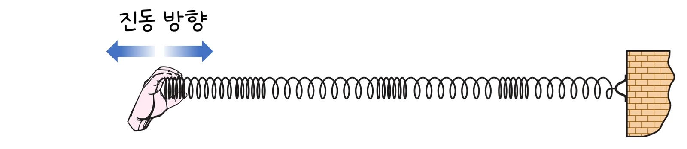

초등 3-4학년 과학 · 소리의 성질 · 웹툰 4화 「소리는 길을 따라 퍼진다」
실험에서 종을 쳐서 공기·물·나무·철·진공으로 소리를 보내고 340 m를 가는 데 걸린 시간을 쟀습니다. 철에서 가장 빨랐고 공기에서 가장 느렸으며, 진공에서는 아예 전달되지 않았습니다. 소리가 무엇을 타고 어떻게 전해지는지 정리합니다.
실험 데이터 되짚기
340 m를 가는 데 걸린 시간입니다. 소리의 빠르기는 실제 측정값(상온 대표값)입니다.
| 물질 | 공기 | 물 | 나무 | 철 | 진공 |
|---|---|---|---|---|---|
| 소리의 빠르기 (m/s) | 343 | 1,480 | 약 3,800 | 약 5,100 | — |
| 340 m 걸린 시간 (초) | 약 0.99 | 약 0.23 | 약 0.09 | 약 0.07 | 전달 안 됨 |
| 상태 | 기체 | 액체 | 고체 | 고체 | 알갱이 없음 |
거리 ÷ 시간은 물질마다 정해진 값으로 늘 같습니다. 대체로 고체 > 액체 > 기체 순으로 빠르고, 알갱이가 없는 진공에서는 소리가 전달되지 않습니다.
소리는 물질의 알갱이가 서로 밀고 밀리며 전달되는 떨림입니다. 공기 알갱이 하나가 흔들리면 옆 알갱이도 흔들리고, 그 옆도 흔들려 도미노처럼 전달됩니다. 그래서 소리가 지나가려면 공기·물·나무·철처럼 알갱이가 있는 물질이 꼭 필요합니다. 알갱이가 없는 진공에서는 소리가 전달되지 않습니다 — 유리병 속 벨의 공기를 빼면 소리가 사라지고, 달에는 공기가 없어 우주 비행사들이 무전기로 대화합니다. 실 전화기는 소리가 팽팽한 실을 타고 전해지는 것입니다.
교재 그림
용수철을 앞뒤로 흔들면 떨림이 옆으로 전해져요

손을 앞뒤로 흔들면 용수철의 촘촘한 곳이 벽 쪽으로 옮겨 가요. 용수철 고리 하나하나는 제자리에서 앞뒤로 떨릴 뿐이에요. 소리도 이렇게 공기 알갱이가 앞뒤로 밀고 밀리며 전해져요.
움직여 보기
소리는 알갱이가 옆 알갱이를 밀어서 전해져요
알갱이 하나하나는 멀리 가지 않고 제자리에서 앞뒤로 떨리며 옆 알갱이를 밀어 줘요. 이 밀고 밀리는 ‘떨림’이 귀까지 가는 것이 소리예요. 공기를 빼면 밀어 줄 알갱이가 없어서 소리가 전달되지 않아요.
알갱이가 서로 단단히 연결되어 밀리면 빨리 되돌아오는 물질일수록 옆 알갱이를 빨리 밀 수 있어 소리가 빠릅니다. 알갱이가 무거울수록 움직이기 어려워 느려집니다. 기체는 알갱이가 멀리 떨어져 있어 느리고 고체는 대체로 단단히 연결되어 빠릅니다. 그래서 흔히 고체 > 액체 > 기체 순이지만 예외도 있어 물렁한 고무 속에서는 소리가 공기보다 느립니다. 기찻길에 귀를 대면 기차 소리가 공기보다 철길을 타고 먼저 들리고, 물속에서는 소리가 공기보다 4배 이상 빨라 고래는 아주 먼 거리까지 소리로 이야기합니다.
움직여 보기
340 m 달리기 — 소리는 어느 물질에서 가장 빠를까?
모두 같은 소리를 동시에 내도 철과 나무(고체)가 먼저, 물(액체), 공기(기체) 순서로 도착해요. 진공에는 알갱이가 없어 소리가 아예 가지 못해요. (표 1의 빠르기, 그림은 4배 느리게)
빛은 거의 즉시 도착하고 소리는 1초에 약 340 m를 가므로, 천둥이 3초 뒤에 들리면 번개는 약 1 km 떨어진 곳입니다. 공기 중 소리의 빠르기는 온도가 오르면 조금 빨라지고(1 ℃에 약 0.6 m/s), 나무는 결 방향에 따라, 철은 종류에 따라 조금씩 다릅니다.
공기 343 · 물 1,480 · 나무 약 3,800 · 철 약 5,100 m/s · 진공 ✕ · 천둥 3초 뒤 ≈ 1 km
“나는 혼자 못 가! 공기 알갱이 친구들이 옆으로 옆으로 부딪히면서 나를 전달해줘야 멀리 갈 수 있어. 어? 공기가 없어지니까 나 갈 곳이 없어! 소리가 하나도 안 들려…”
웹툰 4화 · 공기 알갱이: “내가 흔들리면 옆 친구도 흔들리고, 그 옆 친구도 흔들리고… 이렇게 계속 전달돼!”
“나 같은 단단한 고체를 통하면 소리가 훨씬 더 빠르고 잘 전달돼!”
웹툰 4화 · 물속이: “나를 통해서도 소리가 갈 수 있어! 물속에서는 오히려 공기보다 더 빨리 전달되지.” 실전화 친구: “실이 팽팽할수록 더 잘 전달돼.”
거리 = 340 m/s × 5초 = 약 1,700 m(1.7 km). 빛은 거의 즉시 도착하므로 소리가 걸린 시간만 세면 됩니다.
물: 1,480 ÷ 1,480 = 1초. 공기: 1,480 ÷ 343 ≈ 4.3초. 물속이 4배 이상 빠릅니다.